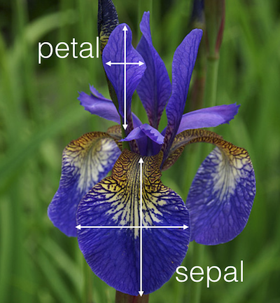

import pandas as pd
import numpy as np
from pathlib import Path
import glob3 Tidy data and combining tables
3.1 Introduction
3.1.1 Motivation
Without good practices, much of the time of a data analyst can be wasted in data wrangling rather than visualization or analysis. The concept of tidy data (Wickham 2014) addresses this issue by offering a standard representation of data, that is easy to manipulate, model and visualize. This chapter introduces the notion of tidy data and operations for tidying up messy datasets. Moreover, we describe how to easily concatenate tables with the same format and merge tables with common variables. This will set us ready for data visualization and analytics.
This chapter is partially adopted from “Introduction to Data Science” by Rafael A. Irizarry (https://rafalab.github.io/dsbook/).
3.1.2 Datasets used in this chapter
The following code chunks load libraries and tables used throughout this chapter.
DATADIR = Path('../../extdata')
election_results = pd.read_csv(DATADIR / 'US-pres16results.csv')
election_results = (
election_results
.loc[
election_results["county"].isna() & (election_results["st"] != "US"),
["cand", "st", "votes", "total_votes"]
]
)
table1 = pd.read_csv(DATADIR / 'table1_alternate.csv')
table2 = pd.read_csv(DATADIR / 'table2_alternate.csv')
table3 = pd.read_csv(DATADIR / 'table3_alternate.csv')
table4 = pd.read_csv(DATADIR / 'table4_alternate.csv')
table5 = pd.read_csv(DATADIR / 'table5_alternate.csv')3.2 Tidy and untidy data
3.2.1 Definition of tidy data
We say that a data table is in tidy format if:
- Each variable has its own column.
- Each observation has its own row.
- Each value has its own cell.
The following dataset from the 2016 US presidential vote1 is an example of a tidy dataset:
| cand | st | votes | total_votes | |
|---|---|---|---|---|
| 32 | Hillary Clinton | CA | 5931283 | 9631972 |
| 33 | Donald Trump | CA | 3184721 | 9631972 |
| 34 | Gary Johnson | CA | 308392 | 9631972 |
| 35 | Jill Stein | CA | 166311 | 9631972 |
| 36 | Gloria La Riva | CA | 41265 | 9631972 |
5 rows × 4 columns
Each row represents a state and a candidate with each of the four values related to these states stored in the four variables: candidate, state, votes, and total_votes.
3.2.2 Advantages of tidy data
Organizing data in a tidy fashion reduces the burden to frequently reorganize the data. In particular, the advantages are:
- Easier manipulation using
pandascommands such as sub-setting by rows and columns, as well asmergeoperations - Vectorized operations become easier to use
- Many other tools work better with tidy data, including plotting functions, hypothesis testing functions, and modeling functions such as linear regression. These advantages will become striking in the following chapters.
3.2.3 Common signs of untidy datasets
Often, untidy datasets can be identified by one or more of the following issues (Wickham 2014):
- Column headers are values, not variable names
- Multiple variables are stored in one column
- Variables are stored in both rows and columns
- A single observational unit is stored in multiple tables
Wickham (2014) furthermore mentions “Multiple types of observational units stored in the same table” as a sign of untidy data. This point is discussed in Section 3.8.
3.3 Tidying up datasets
In this part of the chapter, we show how to transform untidy datasets into tidy ones. To this end, we will present some of the most often encountered untidy formats and present specific solutions to each of them.
3.3.1 Melting (wide to long)
One of the most used operations to obtain tidy data is to transform a wide table into a long table. This operation is called melting, by analogy with melting a piece of metal. It is useful in particular when data is untidy because column headers are values, and not variable names.
As an example, consider the table below which reports vote counts for two US states, California and Florida. In this table, the column names CA and FL are values of the variable state. Therefore, we can say that this table is in an untidy format:
table4| candidate | CA | FL | |
|---|---|---|---|
| 0 | Hillary Clinton | 5931283 | 4485745 |
| 1 | Donald Trump | 3184721 | 4605515 |
| 2 | Gary Johnson | 308392 | 206007 |
| 3 | Jill Stein | 166311 | 64019 |
4 rows × 3 columns
Melting the previous table can be achieved by using the pandas method melt():
pd.melt(table4,
id_vars = "candidate",
value_vars = ['CA', 'FL'],
var_name = "state",
value_name = "votes")| candidate | state | votes | |
|---|---|---|---|
| 0 | Hillary Clinton | CA | 5931283 |
| 1 | Donald Trump | CA | 3184721 |
| 2 | Gary Johnson | CA | 308392 |
| 3 | Jill Stein | CA | 166311 |
| 4 | Hillary Clinton | FL | 4485745 |
| 5 | Donald Trump | FL | 4605515 |
| 6 | Gary Johnson | FL | 206007 |
| 7 | Jill Stein | FL | 64019 |
8 rows × 3 columns
We note that the previous code snippet would also work without explicitly specifying value_vars or id_vars. If value_vars is omitted, pandas will melt all columns not listed in id_vars —or all columns if id_vars is also not provided. Conversely, if id_vars is omitted (and only value_vars is given), pandas will include only the columns defined in value_vars, resulting in an output that contains just the var_name and value_name columns.
When melting, all values in the columns specified by the value_vars argument are gathered into one column with the name specified in the var_name argument.
Additionally, a new column with the name in the value_name argument is created containing all values which were previously stored in the value_vars column names.
After melting, we have a table in a tidy format where a row represents the number of votes for a candidate in a state. The new table also makes clear that the quantities are numbers of votes thanks to the column name.
3.3.2 Pivoting (long to wide)
The other way around also happens frequently. It is helpful when multiple variables are stored in one column. In the table below, multiple values, namely the number of votes for a candidate and the total number of votes, are reported in one column. It is not easy to compute the percentage of votes given to a candidate in this format. To tidy up this table we have to separate those values into two columns:
table2| candidate | state | type | value | |
|---|---|---|---|---|
| 0 | Hillary Clinton | CA | votes | 5931283 |
| 1 | Hillary Clinton | CA | total_votes | 9631972 |
| 2 | Donald Trump | CA | votes | 3184721 |
| 3 | Donald Trump | CA | total_votes | 9631972 |
| 4 | Gary Johnson | CA | votes | 308392 |
| 5 | Gary Johnson | CA | total_votes | 9631972 |
6 rows × 4 columns
This operation, which transforms a long table into a wide table is called casting, following up with the metal forging analogy employed with the term “melting”.
Pandas pivot transforms a long table into a wide table and is achieved with the pivot method whose most frequent usage is:
wide = data.pivot(index='<id>', columns='<pivot_variable>',
values='<value>').reset_index()The .pivot() method requires specifying three key arguments: index, columns, and values.
columns: Specifies which column in the original (long) table contains the categories that will become the names of the new columns in the wide table.values: Refers to the column from which the data values should be extracted to populate the cells under the new wide columns.index: Specifies the column(s) that should form the new row indices (keys) of the wide table. (Note: Usingreset_index()is necessary after the pivot to turn these indices back into regular columns.)
The call then is:
table2.pivot(
index=["candidate", "state"],
columns="type",
values="value"
).reset_index()| type | candidate | state | total_votes | votes |
|---|---|---|---|---|
| 0 | Donald Trump | CA | 9631972 | 3184721 |
| 1 | Gary Johnson | CA | 9631972 | 308392 |
| 2 | Hillary Clinton | CA | 9631972 | 5931283 |
3 rows × 4 columns
3.3.3 Splitting columns
Sometimes single variables can be spread across multiple columns as in the following table.
## One column contains multiple variables
table3| candidate | state | proportion | |
|---|---|---|---|
| 0 | Hillary Clinton | CA | 5931283/9631972 |
| 1 | Donald Trump | CA | 3184721/9631972 |
| 2 | Gary Johnson | CA | 308392/9631972 |
3 rows × 3 columns
The number of votes per candidate is displayed in the numerator of the proportion column and the total number in the denominator.
We split up the proportion column into two columns, one containing the votes and the other one containing the total votes with the method str.split: Since the resulting split columns inherit the initial object dtype (string), we explicitly cast them to integer type to enable downstream computations.
table3[["votes", "total_votes"]] = table3["proportion"] \
.str.split("/", expand=True).astype(int)
table3| candidate | state | proportion | votes | total_votes | |
|---|---|---|---|---|---|
| 0 | Hillary Clinton | CA | 5931283/9631972 | 5931283 | 9631972 |
| 1 | Donald Trump | CA | 3184721/9631972 | 3184721 | 9631972 |
| 2 | Gary Johnson | CA | 308392/9631972 | 308392 | 9631972 |
3 rows × 5 columns
The drawing above visualizes the operation performed above.
3.3.4 Combining columns
In this example the first and last names are separated columns without a real need for it (we will not be interested in computing any statistics over all Hillary’s):
table5| name | surname | state | votes | total_votes | |
|---|---|---|---|---|---|
| 0 | Hillary | Clinton | CA | 5931283 | 9631972 |
| 1 | Donald | Trump | CA | 3184721 | 9631972 |
| 2 | Gary | Johnson | CA | 308392 | 9631972 |
| 3 | Jill | Stein | CA | 166311 | 9631972 |
| 4 | Gloria | La Riva | CA | 41265 | 9631972 |
5 rows × 5 columns
We combine the contents of the name and surname columns into a single candidate column using the string addition operation +
table5["candidate"] = table5["name"] + " " + table5["surname"]3.3.5 Advanced: Columns containing sets of values
Kaggle, a machine learning platform, conducts a yearly survey among its users. Below are a few columns of the answers from the 2017 survey. In those columns, we observe another type of untidy data. In this survey, multiple choice questions were asked from which multiple answers could be selected. For each individual the selected answers are concatenated into a string.
survey = pd.read_csv(DATADIR / 'kaggle-survey-2017/multipleChoiceResponses.csv', encoding='latin-1')
survey[['LanguageRecommendationSelect', 'LearningPlatformSelect', 'PastJobTitlesSelect']].head()| LanguageRecommendationSelect | LearningPlatformSelect | PastJobTitlesSelect | |
|---|---|---|---|
| 0 | F# | College/University,Conferences,Podcasts,Trade ... | Predictive Modeler,Programmer,Researcher |
| 1 | Python | Kaggle | Software Developer/Software Engineer |
| 2 | R | Arxiv,College/University,Kaggle,Online courses... | Data Scientist,Machine Learning Engineer |
| 3 | Python | Blogs,College/University,Conferences,Friends n... | Business Analyst,Operations Research Practitio... |
| 4 | Python | Arxiv,Conferences,Kaggle,Textbook | Computer Scientist,Data Analyst,Data Miner,Dat... |
5 rows × 3 columns
Below is one solution of how the LearningPlatformSelect column could be transformed into a tidy format.
platform_splits = survey['LearningPlatformSelect'].str.split(',', expand=True)
platform_splits['individual'] = survey.index
LearningPlatformMelt = platform_splits.melt(
id_vars='individual',
value_name='Platform',
var_name=None
)
LearningPlatformMelt.sort_values(by='individual').head(n=5)| individual | variable | Platform | |
|---|---|---|---|
| 0 | 0 | 0 | College/University |
| 284172 | 0 | 17 | None |
| 33432 | 0 | 2 | Podcasts |
| 50148 | 0 | 3 | Trade book |
| 267456 | 0 | 16 | None |
5 rows × 3 columns
3.4 Concatenating tables
One frequently has to concatenate (i.e. append) tables with a same format. Such tables may already be loaded into a list or shall be read from multiple files.
For instance, assume a service generates a new file of data per day in a given directory. One is interested in analyzing the files of multiple days jointly. This requires to list all files of the directory, to read each file and to concatenate them into one.
Here is an example with daily COVID-19 data. We first get all file names of the directory into a character vector called files:
files = glob.glob(f"{DATADIR}/cov_concatenate/*")
files[:5]['../../extdata/cov_concatenate/covid_cases_01_03_2020.csv',
'../../extdata/cov_concatenate/covid_cases_08_03_2020.csv',
'../../extdata/cov_concatenate/covid_cases_26_03_2020.csv',
'../../extdata/cov_concatenate/covid_cases_14_03_2020.csv',
'../../extdata/cov_concatenate/covid_cases_23_03_2020.csv']Let us now look at the first table:
df = pd.read_csv(files[0])
df.head()| cases | deaths | countriesAndTerritories | ... | popData2019 | continentExp | Cumulative_number_for_14_days_of_COVID-19_cases_per_100000 | |
|---|---|---|---|---|---|---|---|
| 0 | 54 | 0 | Germany | ... | 83019213 | Europe | 0.115636 |
| 1 | 240 | 8 | Italy | ... | 60359546 | Europe | 1.863831 |
2 rows × 8 columns
To combine the different tables into one, we first read each CSV file and store its contents in a list of DataFrames. For each file, we extract the filename using Path(f).name and add it as a new column called filename using .assign. After all the individual DataFrames are collected in the list dfs, we use pd.concat to concatenate them into a single DataFrame. ignore_index=True ensures the concatenated DataFrame gets a new continuous index instead of keeping the original indices from each file.
dfs = []
for f in files:
name = Path(f).name
df = pd.read_csv(f).assign(filename=name)
dfs.append(df)
df_concat = pd.concat(dfs, ignore_index=True)
df_concat.head()| cases | deaths | countriesAndTerritories | ... | continentExp | Cumulative_number_for_14_days_of_COVID-19_cases_per_100000 | filename | |
|---|---|---|---|---|---|---|---|
| 0 | 54 | 0 | Germany | ... | Europe | 0.115636 | covid_cases_01_03_2020.csv |
| 1 | 240 | 8 | Italy | ... | Europe | 1.863831 | covid_cases_01_03_2020.csv |
| 2 | 163 | 0 | Germany | ... | Europe | 1.002178 | covid_cases_08_03_2020.csv |
| 3 | 1247 | 36 | Italy | ... | Europe | 9.615712 | covid_cases_08_03_2020.csv |
| 4 | 4954 | 49 | Germany | ... | Europe | 42.087848 | covid_cases_26_03_2020.csv |
5 rows × 9 columns
Alternatively, we can achieve the same result in a single line using a Python list comprehension.
df_concat = (pd.concat([pd.read_csv(f).assign(filename=Path(f).name)
for f in files], ignore_index=True)
)
df_concat.head()| cases | deaths | countriesAndTerritories | ... | continentExp | Cumulative_number_for_14_days_of_COVID-19_cases_per_100000 | filename | |
|---|---|---|---|---|---|---|---|
| 0 | 54 | 0 | Germany | ... | Europe | 0.115636 | covid_cases_01_03_2020.csv |
| 1 | 240 | 8 | Italy | ... | Europe | 1.863831 | covid_cases_01_03_2020.csv |
| 2 | 163 | 0 | Germany | ... | Europe | 1.002178 | covid_cases_08_03_2020.csv |
| 3 | 1247 | 36 | Italy | ... | Europe | 9.615712 | covid_cases_08_03_2020.csv |
| 4 | 4954 | 49 | Germany | ... | Europe | 42.087848 | covid_cases_26_03_2020.csv |
5 rows × 9 columns
3.5 Merging tables
Merging two data tables into one by common column(s) is frequently needed. This can be achieved using the merge method whose core signature is:
df.merge(y, # tables to merge
how = 'left', # type of merge
on=None, left_on=None, right_on=None # by which columns
)The four types of merges (also commonly called joins) are:
Inner (default): consider only rows with matching values in the
oncolumns.Outer or full (all): return all rows and columns from
xandy. If there are no matching values, return NaNs.Left (all.x): consider all rows from
x, even if they have no matching row iny.Right (all.y): consider all rows from
y, even if they have no matching row inx.
We now provide examples of each type using the following made up tables:
df1 = pd.DataFrame({
'p_id': ['G008', 'F027', 'L051'],
'value': np.random.normal(size=3)
})
display(df1.head())
df2 = pd.DataFrame({
'p_id': ['G008', 'F027', 'U093'],
'country': ['Germany', 'France', 'USA']
})
df2.head()| p_id | value | |
|---|---|---|
| 0 | G008 | -0.776135 |
| 1 | F027 | -0.056353 |
| 2 | L051 | 0.928743 |
3 rows × 2 columns
| p_id | country | |
|---|---|---|
| 0 | G008 | Germany |
| 1 | F027 | France |
| 2 | U093 | USA |
3 rows × 2 columns
3.5.1 Inner merge
An inner merge returns only rows with matching values in the on columns and discards all other rows:
# Inner merge, default one
m = df1.merge(df2, on='p_id', how='inner')
m| p_id | value | country | |
|---|---|---|---|
| 0 | G008 | -0.776135 | Germany |
| 1 | F027 | -0.056353 | France |
2 rows × 3 columns
3.5.2 Outer (full) merge
An outer merge returns all rows and columns from x and y. If there are no matching values in p_id, it yields missing values (NaN):
# Outer (full) merge
m = df1.merge(df2, on='p_id', how='outer')
m| p_id | value | country | |
|---|---|---|---|
| 0 | F027 | -0.056353 | France |
| 1 | G008 | -0.776135 | Germany |
| 2 | L051 | 0.928743 | NaN |
| 3 | U093 | NaN | USA |
4 rows × 3 columns
3.6 Left merge
Returns all rows from x, even if they have no matching row in y. Rows from x with no matching p_id in y lead to missing values (NaN).
# Left merge
m = df1.merge(df2, on='p_id', how='left')
m| p_id | value | country | |
|---|---|---|---|
| 0 | G008 | -0.776135 | Germany |
| 1 | F027 | -0.056353 | France |
| 2 | L051 | 0.928743 | NaN |
3 rows × 3 columns
3.7 Right merge
Returns all rows from y, even if they have no matching row in x. Rows from y with no matching p_id in x lead to missing values (NaN).
# Right merge
m = df1.merge(df2, on='p_id', how='right')
m| p_id | value | country | |
|---|---|---|---|
| 0 | G008 | -0.776135 | Germany |
| 1 | F027 | -0.056353 | France |
| 2 | U093 | NaN | USA |
3 rows × 3 columns
3.7.1 Merging by several columns
Merging can also be done using more than two columns. Here are two made up tables to illustrate this use case:
df1 = pd.DataFrame({
'firstname': ['Alice', 'Alice', 'Bob'],
'lastname': ['Coop', 'Smith', 'Smith'],
'x': [1, 2, 3]
})
display(df1.head())
df2 = pd.DataFrame({
'firstname': ['Alice', 'Bob', 'Bob'],
'lastname': ['Coop', 'Marley','Smith'],
'y': list('ABC')
})
df2.head()| firstname | lastname | x | |
|---|---|---|---|
| 0 | Alice | Coop | 1 |
| 1 | Alice | Smith | 2 |
| 2 | Bob | Smith | 3 |
3 rows × 3 columns
| firstname | lastname | y | |
|---|---|---|---|
| 0 | Alice | Coop | A |
| 1 | Bob | Marley | B |
| 2 | Bob | Smith | C |
3 rows × 3 columns
We now merge df1 and df2 by first name and last name:
df1.merge(df2, on=['firstname', 'lastname'])| firstname | lastname | x | y | |
|---|---|---|---|---|
| 0 | Alice | Coop | 1 | A |
| 1 | Bob | Smith | 3 | C |
2 rows × 4 columns
Note that merging by first name only gives a different result (as expected):
df1.merge(df2, on='firstname')| firstname | lastname_x | x | lastname_y | y | |
|---|---|---|---|---|---|
| 0 | Alice | Coop | 1 | Coop | A |
| 1 | Alice | Smith | 2 | Coop | A |
| 2 | Bob | Smith | 3 | Marley | B |
| 3 | Bob | Smith | 3 | Smith | C |
4 rows × 5 columns
Also notice that in this case the merge tables has a column lastname_x and a column lastname_y. This is because the two original data tables have a column named the same way (“lastname”), but this column was not part of the “by” argument. Hence, it is assumed that they do not necessarily correspond to the same variable. Hence, they receive distinct names in the returned table.
3.8 Tidy representations are not unique
While untidy data should be avoided, there can be multiple tidy representations for a particular dataset. We explain this regarding i) alternative forms of a single table and ii) the practical utility of non-normalized representations (i.e. with redundant information).
3.8.1 Alternative tidy forms of a table
There can be alternative tidy representations for a same table. Here is an example based on Fisher’s Iris dataset. This classic dataset contains measurements of 4 different attributes for 150 iris flowers from 3 different species. See https://en.wikipedia.org/wiki/Iris_flower_data_set.

from sklearn import datasets
iris = datasets.load_iris(as_frame=True)
iris_df = iris.frame.rename(columns={'target': 'Species'})
iris_df['Species'] = iris_df['Species'].map(dict(enumerate(iris.target_names)))
iris_df.insert(0, 'Flower', [f"F_{i+1}" for i in range(len(iris_df))])
iris_melt = pd.melt(
iris_df,
id_vars=['Flower', 'Species'],
var_name='Attribute',
value_vars=['sepal length (cm)', 'sepal width (cm)', 'petal length (cm)', 'petal width (cm)']
)Here is one tidy representation where each row represents one flower:
# Iris dataset, usual representation
iris_df.head(3)| Flower | sepal length (cm) | sepal width (cm) | petal length (cm) | petal width (cm) | Species | |
|---|---|---|---|---|---|---|
| 0 | F_1 | 5.1 | 3.5 | 1.4 | 0.2 | setosa |
| 1 | F_2 | 4.9 | 3.0 | 1.4 | 0.2 | setosa |
| 2 | F_3 | 4.7 | 3.2 | 1.3 | 0.2 | setosa |
3 rows × 6 columns
Here is another tidy representation where each row represents one measurement:
# Another tidy representation
iris_melt.head(3)| Flower | Species | Attribute | value | |
|---|---|---|---|---|
| 0 | F_1 | setosa | sepal length (cm) | 5.1 |
| 1 | F_2 | setosa | sepal length (cm) | 4.9 |
| 2 | F_3 | setosa | sepal length (cm) | 4.7 |
3 rows × 4 columns
Both representations are tidy and can be more or less useful depending on the downstream analysis. For instance the first representation, which is wide, is handy to assess the relationship between sepal length and sepal width, say by plotting one against the other one or by computing their correlations. The second representation, which is long, can be useful to compute means by attributes or by attributes and species. In the wide form, computing those group means would require to select columns by names which is tedious and leads to not-easily maintainable code. The decisive criteria between using one or the other tidy representation is the definition on what is considered as an observation in the use case.
3.8.2 On multiple types of observational units in the same table
Another important remark for handling tidy data in practice relates to the last common sign of messy datasets according to Wickham (2014), i.e. “Multiple types of observational units are stored in the same table”. Applying this criteria actually depends on the context.
Consider the following table which combines product and customer data:
prod_df = pd.DataFrame({
"productCode": ["p018", "p030", "p018"],
"productName": ["dryer", "phone", "dryer"],
"customerNumber": ["c001", "c001", "c002"],
"customerName": ["Smith", "Smith", "Lewis"],
"priceEach": [450, 600, 450],
"state": ["CA", "CA", "AZ"],
"quantOrdered": [1, 2, 1]
})
prod_df[["productCode", "quantOrdered", "priceEach",
"customerNumber", "customerName", "state"]]| productCode | quantOrdered | priceEach | customerNumber | customerName | state | |
|---|---|---|---|---|---|---|
| 0 | p018 | 1 | 450 | c001 | Smith | CA |
| 1 | p030 | 2 | 600 | c001 | Smith | CA |
| 2 | p018 | 1 | 450 | c002 | Lewis | AZ |
3 rows × 6 columns
This table is tidy. Each row corresponds to an order. The columns are variables. However, it contains repetitive information: the product code, product name and its price on the one hand, the customer number, name and state on the other hand. The information could be stored in separate tables without data repetitions, namely:
- a consumer table:
prod_df[['customerNumber', 'customerName', 'state']].drop_duplicates()| customerNumber | customerName | state | |
|---|---|---|---|
| 0 | c001 | Smith | CA |
| 2 | c002 | Lewis | AZ |
2 rows × 3 columns
- a product table:
prod_df[['productCode', 'priceEach']].drop_duplicates()| productCode | priceEach | |
|---|---|---|
| 0 | p018 | 450 |
| 1 | p030 | 600 |
2 rows × 2 columns
- an order table:
prod_df[['productCode', 'customerNumber', 'quantOrdered']].drop_duplicates()| productCode | customerNumber | quantOrdered | |
|---|---|---|---|
| 0 | p018 | c001 | 1 |
| 1 | p030 | c001 | 2 |
| 2 | p018 | c002 | 1 |
3 rows × 3 columns
The three-table representation, where each table has unique entries is called a normalized representation. Normalized representations ensure that no multiple types of observational units are stored in the same table. It is a good habit to have normalized representations for database back-ends because it facilitates maintenance of the data consistency by reducing redundancy. One should not enter all customer details at each order but do it one central place and link the information with a customer number.
However, on the data analysis side (front-end), we are not interested in maintaining a database (back-end), rather in having the desired data in a ready-to-use format which depends on our needs. To this end, the merge table is very handy and can be the common denominator of multiple analyses like:
# vectorized operations e.g. total price of each order
prod_df["totalPrice"] = prod_df["quantOrdered"] * prod_df["priceEach"]
# group by operations, e.g. number of products per states
prod_df["N_prod"] = prod_df.groupby("state")["productCode"].count()Hence, the choice of the representation (normalized or not) depends on the context: back-end or front-end.
3.9 Summary
By now, you should be able to:
- define what a tidy dataset is
- recognize untidy data
- perform the operations of melting and casting
- perform the operations of uniting and splitting
- append tables with the same format by rows
- understand and perform the 4 merging operations
3.10 Tidy data resources
Tidy data: H. Wickham, Journal of Statistical Software, 2014, Volume 59, Issue 10 https://www.jstatsoft.org/v59/i10/paper
Pandas: https://pandas.pydata.org/docs/index.html
Wickham, Hadley. 2014. “Tidy Data.” Journal of Statistical Software, Articles 59 (10): 1–23. https://doi.org/10.18637/jss.v059.i10.
https://www.kaggle.com/stevepalley/2016uspresidentialvotebycounty?select=pres16results.csv↩︎